衣装制作
衣装ができるまで
皆様にお届けする大切なお衣装の数々。
華結びで扱うお衣装は日本で長い時間をかけて培われてきた技術の結晶です。
皆様の晴れの日を飾るお衣装がどのように作られるのか、
ここではそんな呉服の製作現場を一部、ご紹介致します。
図案
一枚の用紙をくりかえし繋げていくようにするなど、緻密な計算を行いながら一枚の用紙に下絵を描いていきます。デザインの決まった下絵を墨でなぞっていく際には、線の強弱がそのまま着物の仕上がりに反映されるため、仕上がりを計算に入れた熟練の技が必要です。
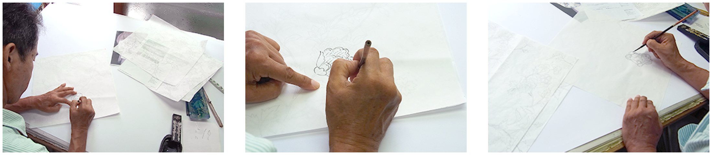
手描き友禅
モチ米を原料とした「糸目糊」で下絵の輪郭を描き、その内側を彩色していく染織技術です。糸目という名前の通り、細く均一な縁取りを自由自在に描くには大変な技術が必要となり、当然その細やかな防染の内側を染め分けていく工程にも職人の手作業が光ります。染め分ける技術は勿論、配色や暈しなど繊細な技術でもって友禅の柄が描かれていて、柄の染め分けが終わると今度は柄部分全体に防染糊を施し、引き染めで地色を染めてひとつの反物が出来上がります。
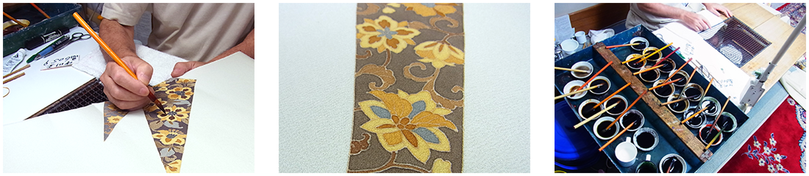
引染
引染とは刷毛を使い、生地を染めていく方法です。一枚の反物を刷毛で染めていくため、「ムラ」ができないよう全体を均一に染め上げるには熟練の技術が必要となります。また「引染」は「ぼかし染め」がやり易いため「ぼかし染」は引染で行われることが多く、この染め方は手描き友禅だけでなく、ろうけつ染め、小紋染め、型友禅染めの地染めなど幅広く使われています。
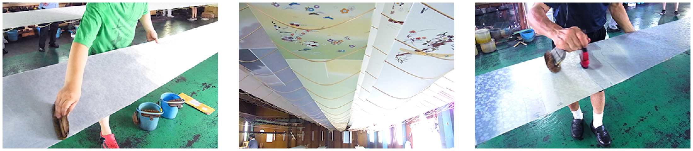
金彩加工
全ての工程が終了した布地の、金で柄を置きたい箇所に糊を置き、その上から金箔・金粉を置いて柄を描き、全体のデザインを仕上げます。最終的な着物の華やかさを決定づける重要な役割を担っており、その技術は桃山・江戸初期から連綿と受け継がれてきました。また、金彩加工は仕立て上がった着物を解くことなく加工することができるので、シミができてしまった着物を上手くリフォームする知恵の一つでもあります。
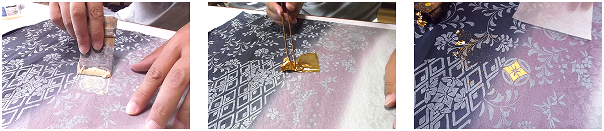
糸染め
織物に使用する糸は、生糸に下処理をおこない指定された色に調合された染料の鍋で炊く、「先染め」が施されています。色ムラの出ないきれいな糸に染め上げるには、気温や湿度により温度や時間調整が必要で、そのさじ加減には長年の経験が必要となりそうして出来あがった糸は鮮やかな発色と美しい艶に仕上がります。
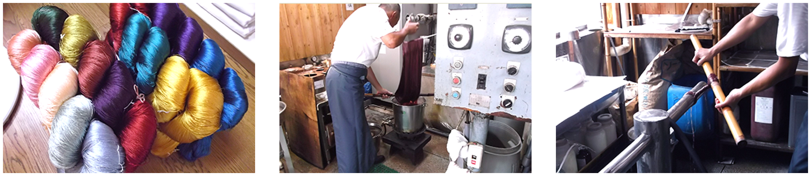
西陣織
織物の歴史は非常に古く、紀元前8000年前にはすでに手織りの布があったと考えられており応仁の乱を経て、「高機」と呼ばれる大陸からの技術を取り入れた西陣織は高級織物の代表として京都に根付いていきます。そして文明開化を迎える頃には西洋の「ジャガード織」などを取り入れ近代化に努める一方、伝統技術の更なる高度化や図案の洗練により今に続く織物産業の代表としてその地位を確立していきました。
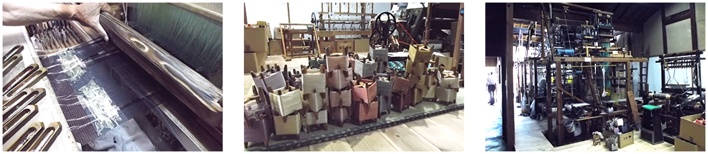
刺繍
金糸を柄に這わせて縫い止めていく金駒刺繍や、玉結びを連ねて柄を描いていく相良刺繍など、機械ではできない繊細な技術によって柄ゆきに立体感が生まれ、より一層の豪華なお着物へと仕上がります。
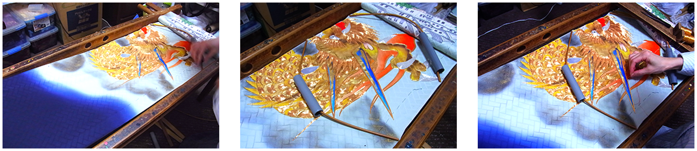
技法・素材
婚礼衣装には様々な技法や素材が使われています。
長年修業を積んだ職人による技を詰め込んだ芸術品とも言える婚礼衣装。
また、素材にもこだわった打掛の魅力をご紹介いたします。
-
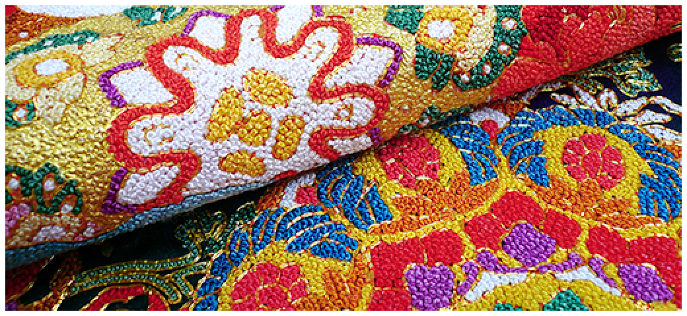
相良刺繍
中国三大刺繍の一つ。歴史が古く、中国では漢の時代（紀元前206年〜）から、日本では奈良時代（710年〜）には使用されています。最大の特徴は柄に沿って色糸を縫っていく刺繍とは違い、生地の裏から糸を抜き出して結び玉を作りそれを連ねる事で模様が出来上がっていくところ。普通の刺繍より立体感があり、色彩も豊かで色の強弱によるグラデーションも豪華。たいへんな技術と労力を要するため刺繍職人が減ってきており、さらに機械では出来ない技法のため今では貴重品となってきています。
-
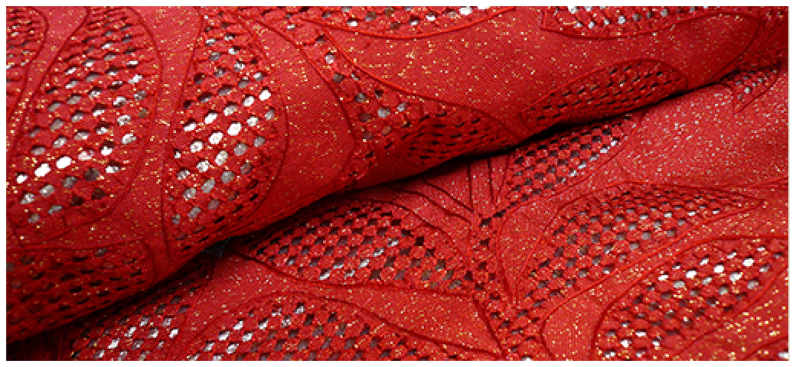
汕頭（スワトウ）刺繍
中国三大刺繍の一つ。生地の一部に穴を開けてその糸を使い繊細な文様を表現する技法。熟練された高度な技を必要とし、非常に高価であるためハンカチなどにはよく使用されますが、打掛に使われるのは大変貴重です。
-
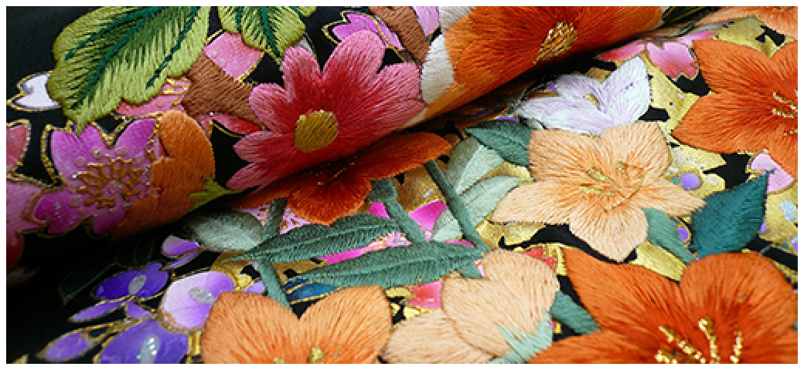
刺繍
何百とある色に染め上げた絹糸で柄を埋めていく非常に繊細な技法。織物とは違い、ふっくらと立体的に仕上がるのが特徴でグラデーションも美しい技法です。
-
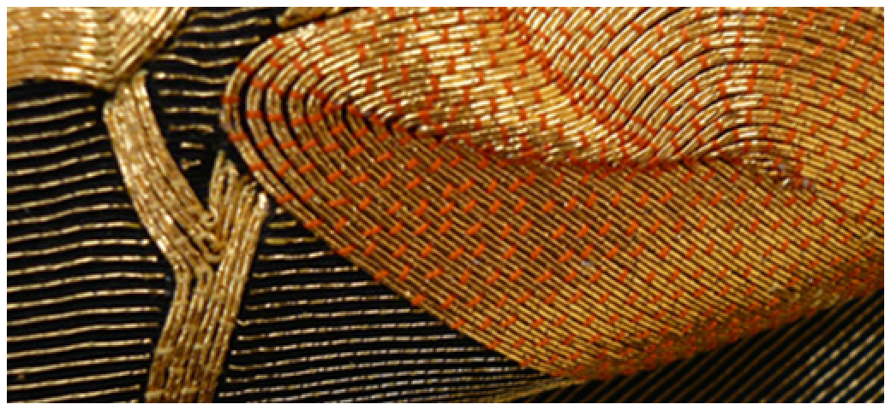
金駒・銀駒刺繍
刺繍針に通せないほどの太い糸や、金糸などを木製の駒（糸巻きの一種）に巻いて、その糸自体を生地に縫い込むのではなく、糸巻きを転がしながら刺繍糸を下絵に沿って這わせ、綴じ糸（とじいと）で留めていく技法。綴じ糸の間隔が揃っているのはまさに職人の技。中でもこよりに金箔を巻き付けた「金糸」を使ったものを「金駒刺繍」と呼びます。
-
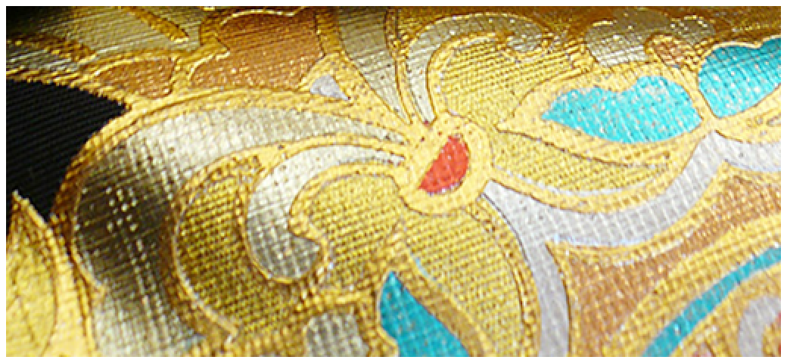
手描き金彩友禅
手描き友禅はその名の通り、柄の下書きから色付けまで全てを職人の手による染めの技法。金彩（きんさい）は金加工とも言われ、染め上がった生地に金箔や金彩等を接着する加工です。友禅染めをより華やかに表現するために行いますが、必要以上に手を加えると品格が損なわれるため友禅の色と金彩加工により、織物や刺繍では表現できない色鮮やかで華美な着物に仕上がっています。
-
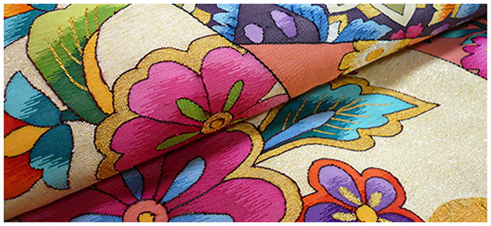
明綴れ
綴れ織りは横糸に多彩な色の糸を使用し、つづら折りのように織り進めて模様を織り出す手織物で、地となる組織の横糸も折り返しながら織っていくため色の境目に縦方向の隙間が出来ます。明綴れは一寸あたりの縦糸の数が多いため、綴れの中でも細かい色のグラデーションを表現する事が可能な技術。
-
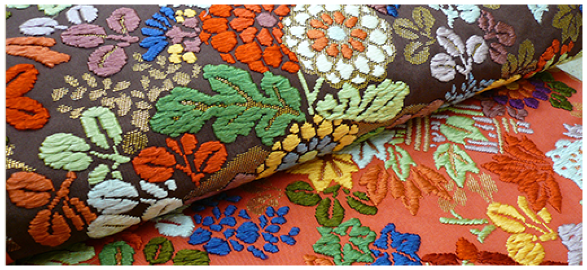
唐織
中国から伝わった織物で、西陣を代表する織物の技法の中のひとつ。日本が世界に誇る伝統芸能「能」の衣装にも使われており、薄く織られた生地に糸を表面に浮かせて織り上げるので、柄が立体的に見えるところが大きな特徴です。柄の立体感、色彩豊かで重厚感・高級感のある唐織は、現代の錦地の中で最も高級とされる織物です。
-
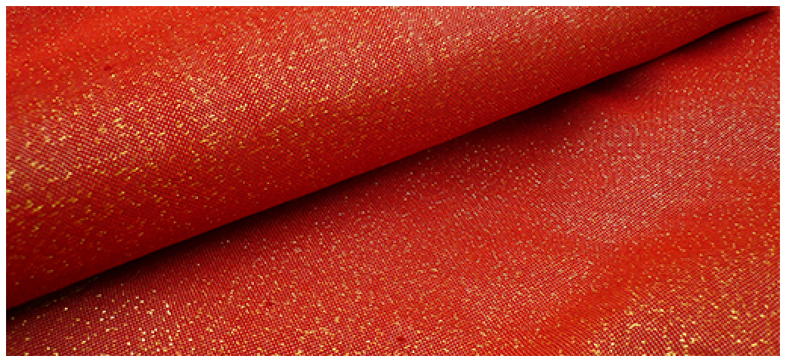
金通し・銀通し
織物全体の緯糸に「金糸・銀糸」を織り込む事により、無地場に立体感が増します。見る角度によって生地が光り、派手すぎない華やかさを演出。
-
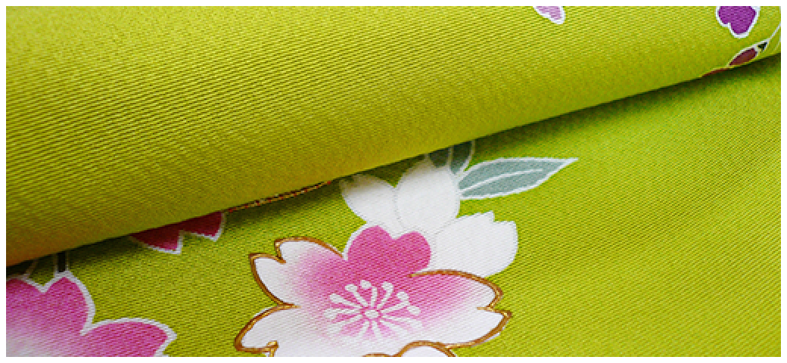
縮緬
表面に細かいしぼ（シワ模様）のある絹織物で、生地が立体的に見えます。織物等とは違い、重量感が無く軽い着心地が特徴。
-
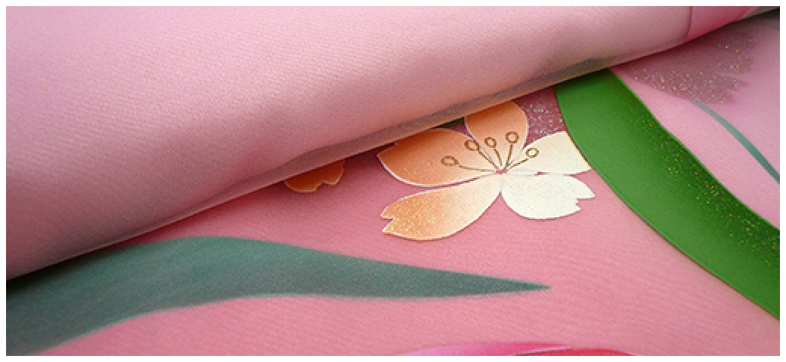
オーガンジー
薄くて軽く、下の生地が透けて見える織物。婚礼衣装としては主にドレスに使われているものですが、レストランウェディングやホテルでの披露宴に洋装のテイストを含んだ和装として近年様々な種類が作られています。
-
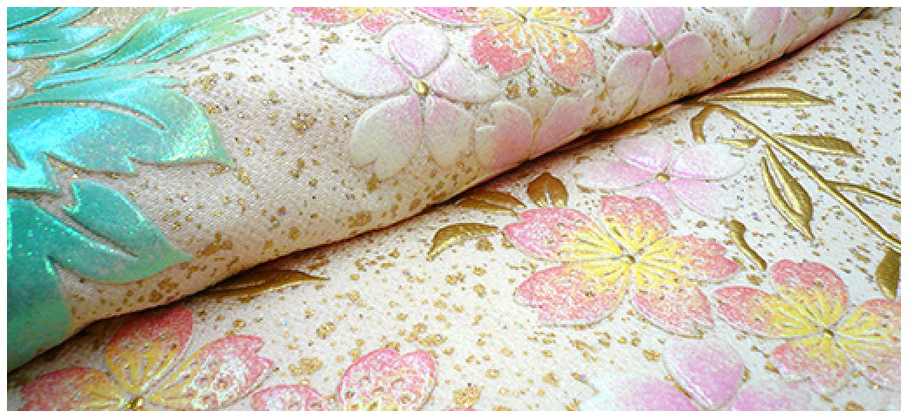
エンボス
裏面を押し上げて表面に凸を付ける事で生地全体を立体化する加工。モダンデザインの婚礼衣装に良く使用される技法です。
-
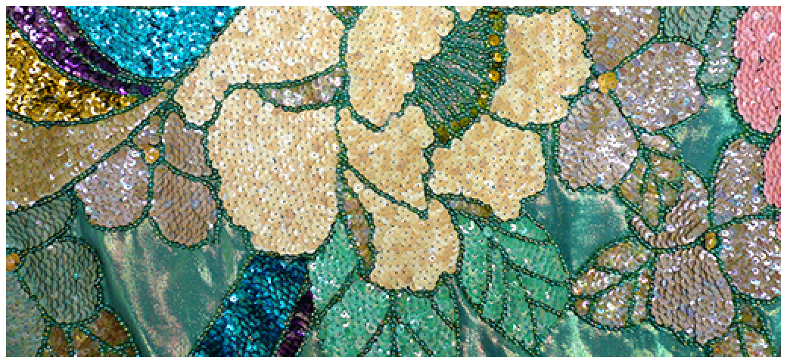
スパンコール
光を反射させるために婚礼衣装としては主にドレスに使用されますが、ホテル等の披露宴会場でライト映えがするため和装にも用いられる事があります。